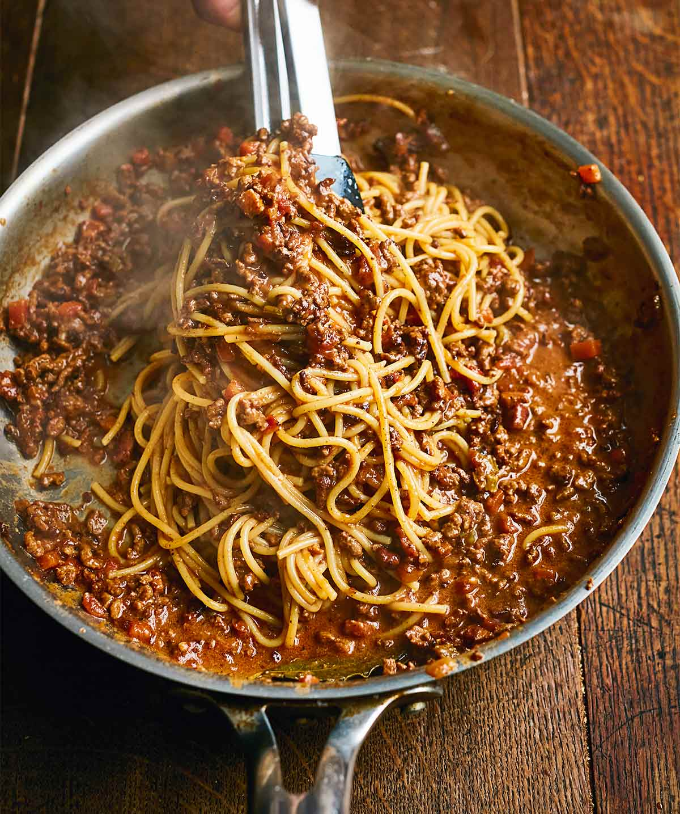

SPAGHETTI BOLOGNESE

INGREDIENTS
- 1 lb Ground beef
- 3 cloves Garlic, 1 Onion(large), 1 tbsp Oregano(dried), 28 oz Tomatoes
- 2 tbsp Tomato paste
- 1/2 lb Spaghetti
- 1 Salt and pepper
- 2 tbsp Olive oil
- 1 Good sized handful fresh parsley (chopped)
DIRECTIONS
- Heat the olive oil in a large pan over medium heat. Add the onions and sauté until lightly golden, 2 to 3 minutes. Add the garlic and fry another minute..
- Add the ground beef
- Fry until fully cooked and no pink shows at all in the meat. Then add the tomato paste and mix with the meat. Add the oregano.
- Add the tomatoes, parsley, and season with salt and pepper.
- Simmer 15 minutes. Serve with freshly cooked spaghetti.
- Enjoy every last bite!
BACK TO MAIN MENU